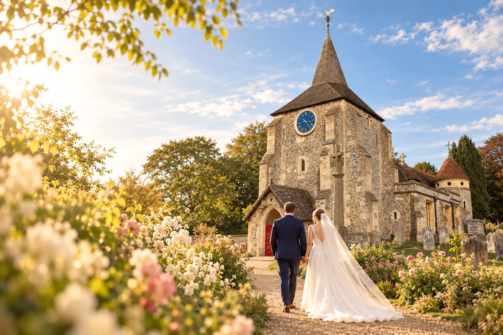
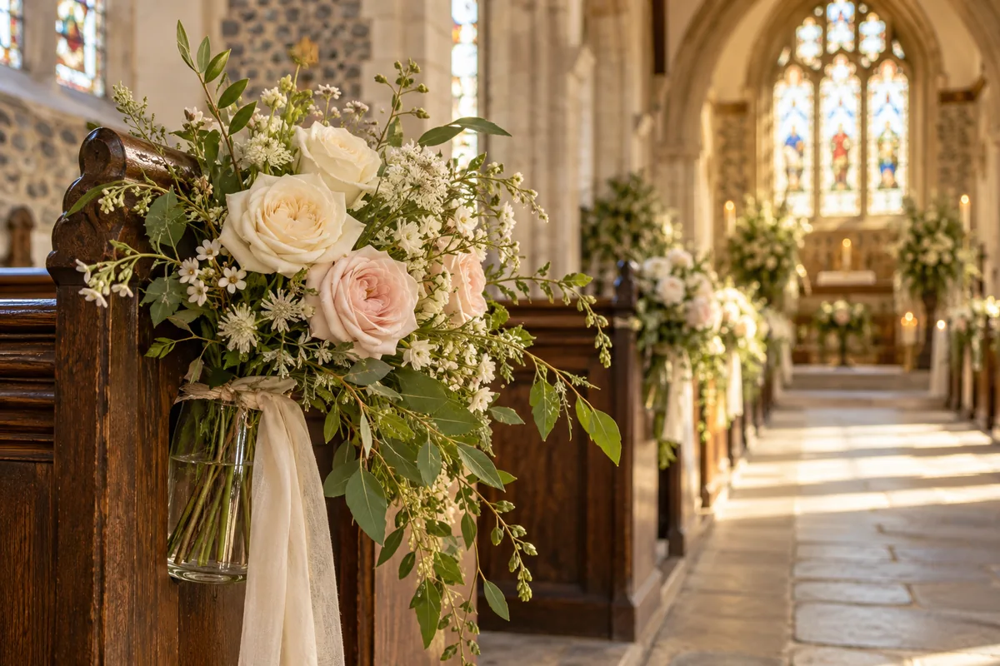
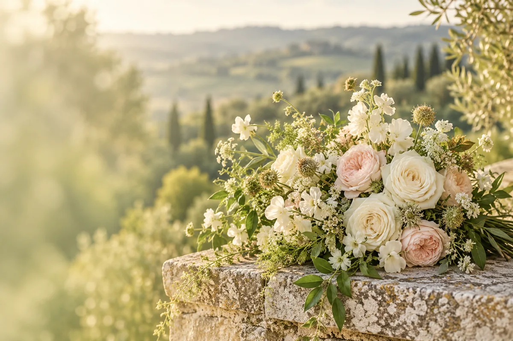

A meaningful ceremony
A church wedding, rooted in Christian faith.

Life events at our church
Begin a conversation about your wedding at St Michael and All Angels, surrounded by the beauty of Mickleham.
A church wedding, rooted in Christian faith.
A local parish ready to hear your plans and questions.
Discover the church and its setting in Mickleham.
Seasonal, local flowers and foliage for your celebration.

Your wedding journey
A meaningful beginning starts with a conversation.
The parish welcomes enquiries from couples considering a wedding at St Michael and All Angels. The local parish is the place to begin a conversation about your circumstances and what may be possible.
The first steps
The parish can discuss the next steps with you. Eligibility, dates, preparation and fees depend on current Church of England guidance and your circumstances, so they should be confirmed directly with the parish.
Talk to the parish about your circumstances and eligibility.
Ask about dates, preparation and the next steps for your service.
Confirm current fees and arrangements directly with the parish.

Sustainable flowers
Beauty for your day.
Care for God’s creation.
For regular and occasional services, the parish encourages seasonal, local flowers and foliage.
Flowers and foliage with a sense of the season.
Flowers do best arranged in water.
Please do not use floral foam, including Oasis.
The parish guidance links to Sustainable Church Flowers for sustainable mechanics and inspiration.
Talk flowers with us
For a special occasion or information about local providers, contact Alison Wood.
flowers@micklehamchurch.org.uk01372 376443
Helpful guidance
The Church of England’s national guidance offers further information about eligibility, banns, the ceremony and practical preparations. For local questions, contact the parish.
Church of England wedding guidance Plan your visit →We’d love to hear from you
If you are considering marriage at St Michael and All Angels, the parish welcomes you to begin with a local enquiry.